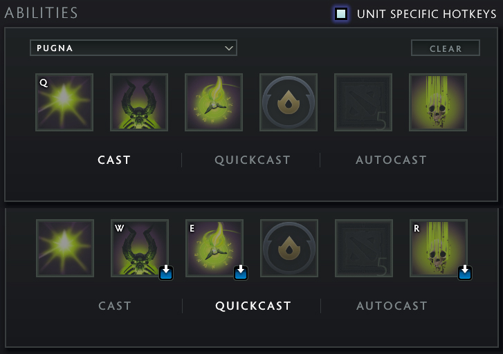
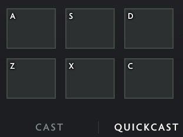
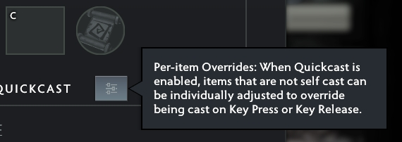
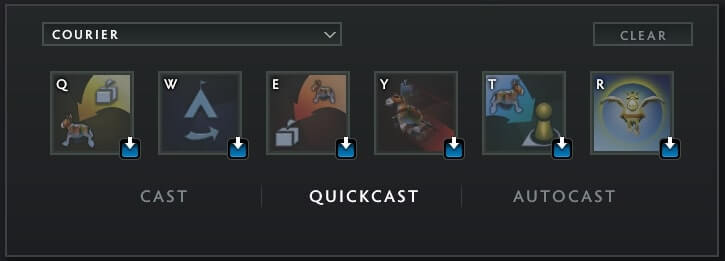
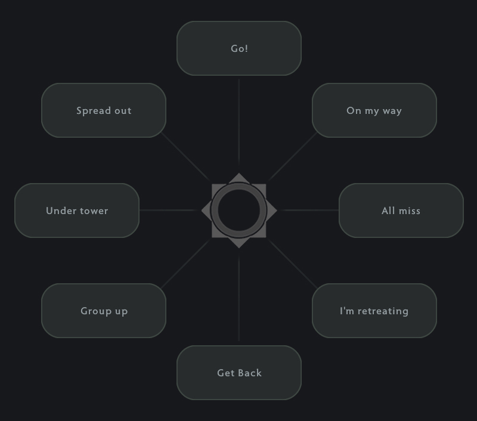

A layout should make sense: mechanically and visually.
The more intuitive it is - the better for performance.
I'm fairly confident this is the best Dota 2 hotkey layout possible.
And I'm going to explain the logic behind it on this page.
p.s. it's quite extensive
Alt is our "self-cast" modifier.
Think of Alt as "to me".
This enables us to quickly and easily cast what we need on ourselves in battle.
We want to group all
In this layout we cluster them around 1
More on courier usage later.
Abilities use the intuitive QWERT layout:
Not everyone knows, but
This is very convenient, because you can do it instantly.
Quick Casts allow us to cast instantly with a key press, eliminating the need for a mouse click.
Everything should be on Quick Casts, with one exception - precise Area of Effect spells.
Notable examples:
Because we need to aim these very carefully - it's better to keep them on Normal Cast.
Alternatively, check
This allows us to instantly fire the ability as it is on Quick Cast, but holding down the ability key will not fire it until we release it.
Now, not every hero has
And when they do, sometimes it's important and sometimes not at all.
Y is not a good key for an important ability - it's too far.
So, because we do not have
For example, for Invoker I would use 4 for
But for most heroes I use R for
Arguably, instant access to items is more important than instant access to abilities.
That's why we bind them all to Quick Cast.
And just like with abilities - we must have instant access to self-cast.
That's why we don't bind them to Alt to begin with.
We also want them to be intuitive and easily accessible.
That's why we bind our items right below the ability row.
This way, all items are easily accessible, self-cast is easily accessible and the layout is visually coherent with the in-game interface.
You will never miss click anything this way.
Very few people even aware of this option, but it's the best.
This menu allows us to set Normal Cast per item, overriding Quick Cast slot binds.
Uncheck the following:
Regardless of their inventory slot these items will be on Normal Cast.
This is especially valuable for
Same logic for the other ones.
The
Easily accessible and (almost) visually coherent.
Let's use a key that's close to items.
That's why we use G:
Think of G as "Go Ground".
Despite the fact that on user interface
Do not bind
We buy items often.
And it follows that we should use the keys that are close to our item binds:
B for
Buy Now.
While we are on the topic of items, let's discuss buying them.
These keys are very unusual and should surprise most players.
Courier maintains its actions on Q W E R T.
Highly recommended to bind
R is also much easier to reach.
I've been using Spacebar for
Thumb is usually a very underutilized finger, so for such a frequent action - it's just great.
And having it right under abilities and items - just makes perfect sense.
If you think of S as Stop, think of F as Freeze, Forfeit or F*ck it.
Either way, I promise you will find these extremely comfortable.
It's a weird key, because it's not a priority, but 'spikes in value' - so needs easy access.
CapsLock is a great key for
So that's why we are using Alt + F because that's what's left and it's somewhat related to movement.
I found having a hotkey for
Because
This is not for flavor - this is a mandatory bind, and it has to be easily accessible.
The buttons on the side of your mouse - if you have them - can be a good option as well.
Over a decade I figured this is the required setup to play.
Towards the top we have progressively "aggressive" call-outs.
Towards the bottom we have progressively "defensive" call-outs.
Synergizes perfectly well with every other call out.
It's the backbone of "DO NOT DO ANYTHING STUPID".
Prepares the team for action.
Reminds them not to dive.
Reminds them not to chase off your own high ground.
It's the best.
Generally useful around objectives, especially high-ground.
Used with
It's also useful when you actually want to group up, i.e. for AOE heals or smokes.
So it serves as "Wait for me" and "I'm not there yet" at the same time.
These are great call-outs, because they lower the chance of our team overextending. Our team needs to know whether or not they can rely on us to make better decisions.
Use with
...
Work in Progress...
written and produced by etofok 2025
etofok is not affiliated with or endorsed by Valve (unfortunately). All relevant trademarks belong to their respective owners.